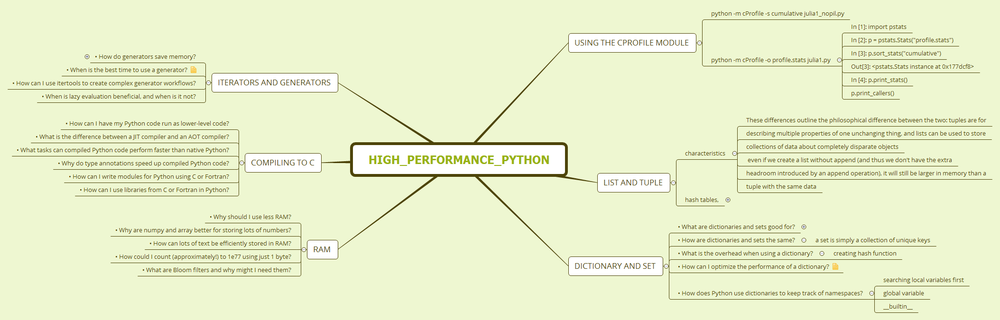

high_performance_python

Using the cProfile Module
python -m cProfile -s cumulative julia1_nopil.py
python -m cProfile -o profile.stats julia1.py
In [1]: import pstats
In [2]: p = pstats.Stats("profile.stats")
In [3]: p.sort_stats("cumulative")
Out[3]: <pstats.Stats instance at 0x177dcf8>
In [4]: p.print_stats()
p.print_callers()
list and tuple
characteristics
These differences outline the philosophical difference between the two: tuples are for
describing multiple properties of one unchanging thing, and lists can be used to store
collections of data about completely disparate objects
even if we create a list without append (and thus we don’t have the extra
headroom introduced by an append operation), it will still be larger in memory than a
tuple with the same data
hash tables,
Once a list has been sorted, we can find our desired element using a binary search (Example 3-3), which has an average case complexity of O(log n). It achieves this by first looking at the middle of the list and comparing this value with the desired value. If this midpoint’s value is less than our desired value, then we consider the right half of the list, and we continue halving the list like this until the value is found, or until the value is known not to occur in the sorted list. As a result, we do not need to read all values in the list, as was necessary for the linear search; instead, we only read a small subset of them
dictionary and set
• What are dictionaries and sets good for?
Sets and dictionaries are ideal data structures to be used when your data has no intrinsic order, but does have a unique object that can be used to reference it (the reference object is normally a string, but can be any hashable type). This reference object is called the “key,” while the data is the “value.”
• How are dictionaries and sets the same?
a set is simply a collection of unique keys
• What is the overhead when using a dictionary?
creating hash function
• How can I optimize the performance of a dictionary?
• How does Python use dictionaries to keep track of namespaces?
searching local variables first
global variable
__builtin__
Iterators and Generators
• How do generators save memory?
Since xrange already returns an iterator, calling iter on it is a trivial operation, and it simply returns the original object (so type(xrange(1,10)) == type(iter(xrange(1,10)))). However, since range returns a list, we must create a new object, a list iterator, that will iterate over all values in the list.
• When is the best time to use a generator?
• How can I use itertools to create complex generator workflows?
• When is lazy evaluation beneficial, and when is it not?
Compiling to C
• How can I have my Python code run as lower-level code?
• What is the difference between a JIT compiler and an AOT compiler?
• What tasks can compiled Python code perform faster than native Python?
• Why do type annotations speed up compiled Python code?
• How can I write modules for Python using C or Fortran?
• How can I use libraries from C or Fortran in Python?
RAM
• Why should I use less RAM?
• Why are numpy and array better for storing lots of numbers?
• How can lots of text be efficiently stored in RAM?
• How could I count (approximately!) to 1e77 using just 1 byte?
• What are Bloom filters and why might I need them?